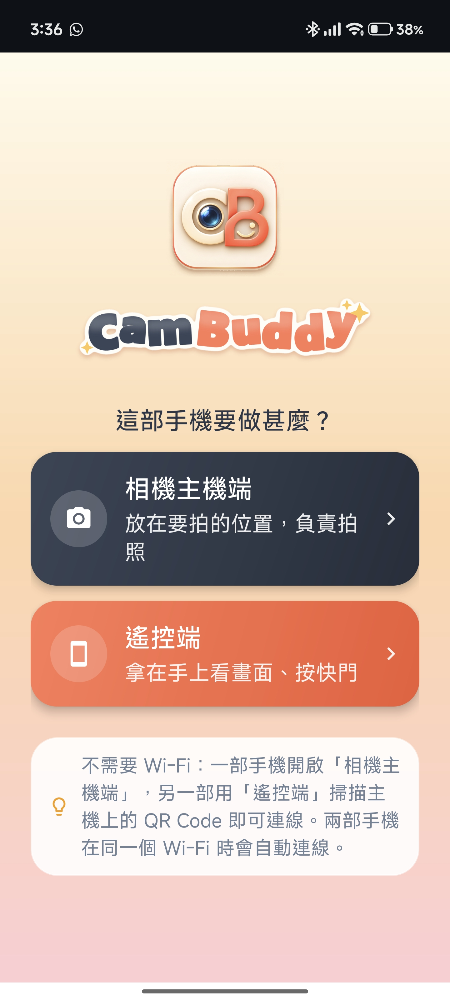

不用複雜設定。CamBuddy 把一部手機變成遠端相機，另一部變成遙控器，遙控拍照、錄影都輕輕鬆鬆。

專為情侶合照、戶外旅遊與自拍創作打造的極致體驗
戶外沒有 Wi-Fi 也可以：主機自動建立配對熱點，一掃 QR Code 就連上，密碼自動輸入。兩部手機在同一個 Wi-Fi 時，更會自動連線。
控制列會自動隱藏，點一下畫面就出現，取景不被遮擋。支援雙指捏合縮放，倍率即時顯示。
自動讀取每部手機不同的鏡頭倍率與曝光補償（EV）範圍，新舊 Android 手機都能順暢使用。
遙控端一鍵切換拍照與錄影，並可控制閃光燈與手電筒。按下快門時畫面閃一下，拍到沒有一看便知。
拍完的相片立即傳回遙控端，在快門旁顯示縮圖，點一下就能全螢幕查看，不用走回主機那邊。
連線後主機螢幕會自動變暗省電，鏡頭照常運作。相片與影片集中存放在「CamBuddy」相簿，容易找。
流暢直覺的互動，讓拍照變成一種享受
將作為相機的手機固定好，並點選「相機主機端」生成專屬 QR Code。
拿著另一部手機點選「遙控端」，掃描主機 QR Code 即可瞬間完成配對。
在遙控端即時預覽畫面、雙指縮放、調整 EV，輕鬆遙控拍照或錄影！
CamBuddy 目前正在進行最後的測試與準備工作。敬請期待全新清新奶油風與雙機遙控體驗！